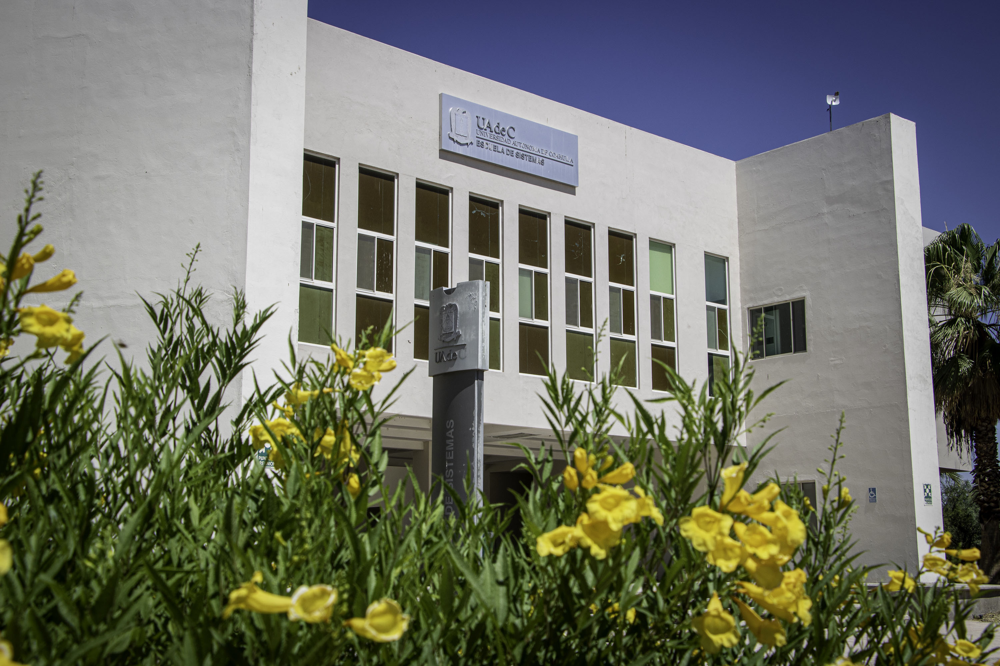
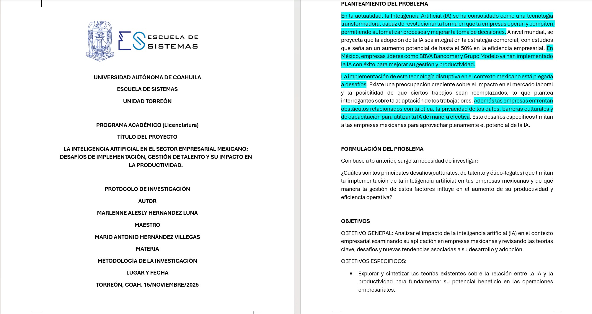
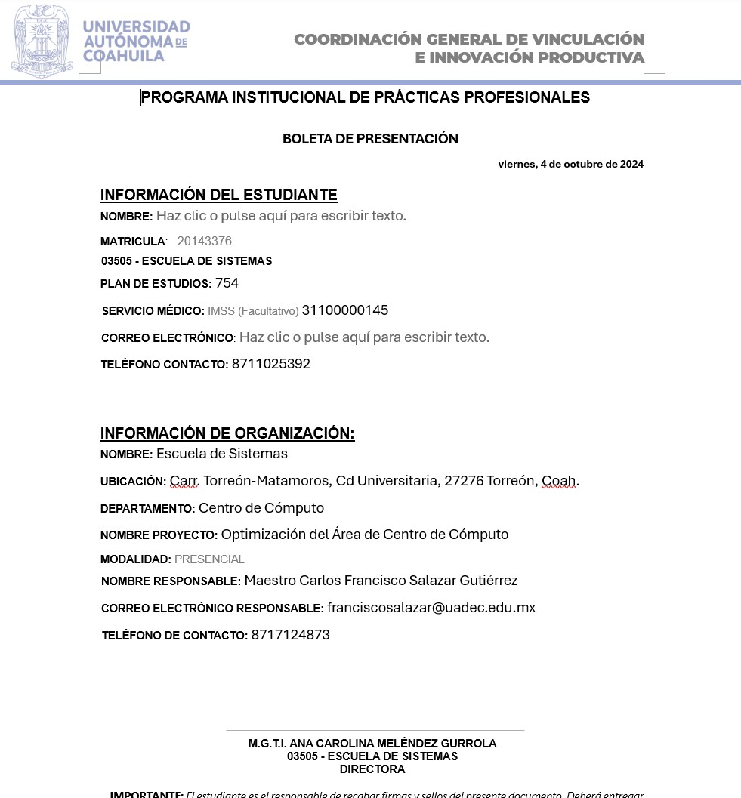
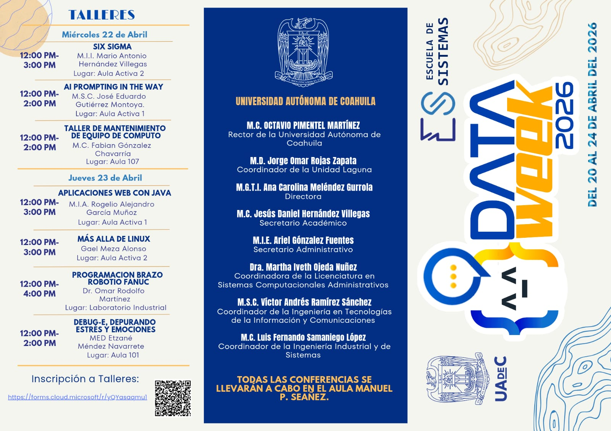

Universidad Autónoma de Coahuila
Escuela de Sistemas - Unidad Laguna
Licenciatura en Sistemas Computacionales Administrativos
Formación Profesional
En esta etapa universitaria he consolidado mi pasión por la tecnología, orientándome hacia el desarrollo de soluciones lógicas, el diseño de infraestructuras de red seguras y la administración eficiente de sistemas de información empresariales.

Áreas de Mayor Interés
Bases de Datos
Diseño de diagramas entidad-relación para sistemas de control escolar y administrativo. Creación de consultas complejas SQL, manipulación de datos desde phpMyAdmin y modelado relacional con MySQL enfocado a la gestión empresarial.
Redes y Servidores
Configuración de arquitecturas de red con Cisco Packet Tracer, direccionamiento IP y Subnetting, asignación de interfaces y comandos en routers y switches Cisco. Instalación y despliegue de un stack LAMP completo (Linux, Apache, MySQL, PHP) sobre Ubuntu Server.
Desarrollo de Software
Creación de interfaces web interactivas (HTML, CSS, PHP) y diseño de aplicaciones móviles modernas e intuitivas utilizando Flutter y Dart.
Proyectos y Logros Destacados
"Aura" - Asistente Personal con IA
Desarrollo de una aplicación móvil con Flutter orientada a la gestión de tareas académicas, integrando almacenamiento local con SQLite y optimización de flujos de usuario.
Investigación de Tesis
Desarrollo del proyecto de investigación enfocado en la implementación de la Inteligencia Artificial en el sector empresarial mexicano, analizando sus desafíos de gestión y su impacto productivo.

Servicio Social - Prácticas Profesionales
Experiencia administrativa en el departamento de Prácticas Profesionales de la Escuela de Sistemas, realizando control y gestión de archivos digitales, atención y orientación a alumnos sobre trámites de residencias, así como redacción de oficios y cartas de presentación institucionales.

Logística DataWeek 2026
Participación activa en la organización del evento tecnológico de la Escuela de Sistemas. Colaboración en el diseño y creación de contenido promocional, así como en la redacción y gestión de invitaciones formales para conferencistas y ponentes invitados.
